Scape Health
A digital product for reducing long hospital wait times.
Designed a healthcare experience to help patients book appointments, manage hospital visits, and reduce avoidable waiting.
View Case Study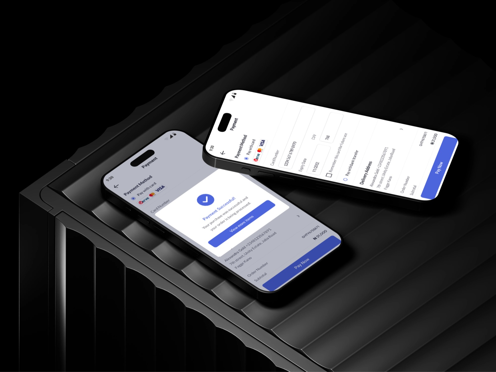
In sub-Saharan Africa, most young people work, but 3 in 4 lack secure work, and more than one in five are not in employment, education or training. LearnAM offers professional and vocational courses to help young people build skills for steadier work or grow the trades they already have. (International Labour Organization, Global Employment Trends for Youth 2024.)
When I joined in May 2021, the team had just launched a KaiOS MVP for feature phones, but few people were signing up and those who did weren’t staying engaged. Over the next 13 months, we researched why and redesigned the Android and iOS apps. After launch, alongside a new awareness campaign, downloads rose by about 50%.
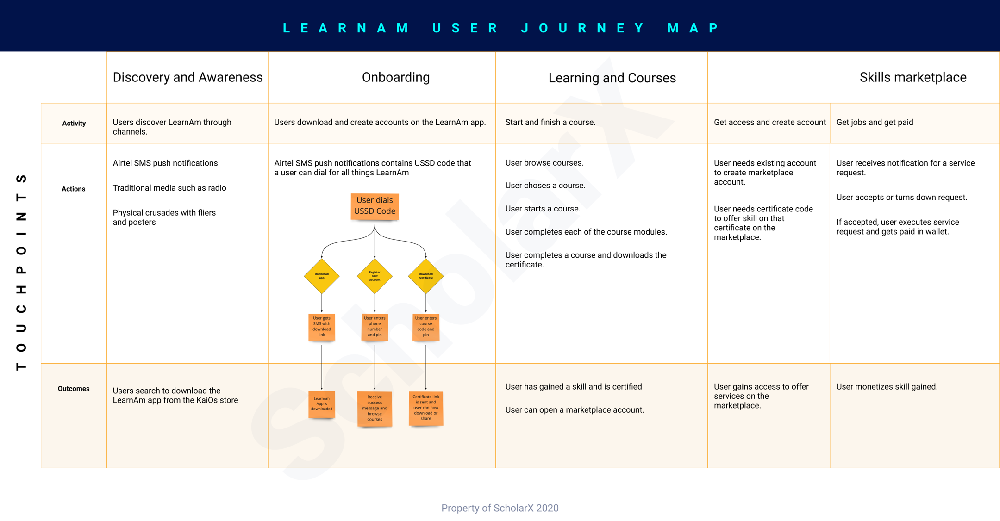
I was the product designer for the Android and iOS apps, working with two researchers, a product manager and three engineers. I joined our researchers on the field studies and contributed to synthesising the usability findings. I also built the design system for ScholarX, LearnAM’s parent company, by adapting The Designership’s design system kit, and we used it to build the final version of the app. Outside the app, I designed LearnAM’s marketing materials, which are covered at the end of this case study.
We began with a two-week design sprint. We audited the existing app and held an alignment workshop, where we wrote four draft personas and listed our assumptions about how people would use the product.
We then tested those assumptions through field studies and unmoderated usability tests with 20 people. We watched their first impressions, how they signed up, and how they found their way around the app. We also asked about the content and the ways they preferred to learn.
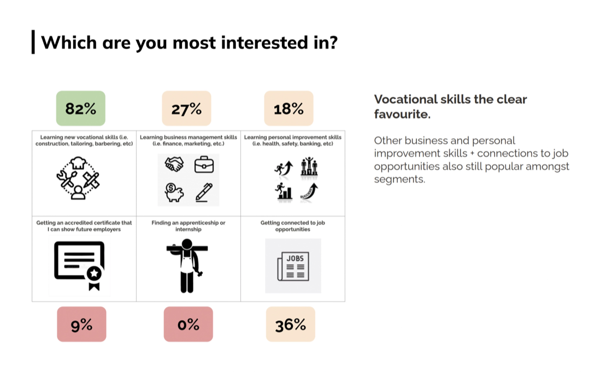
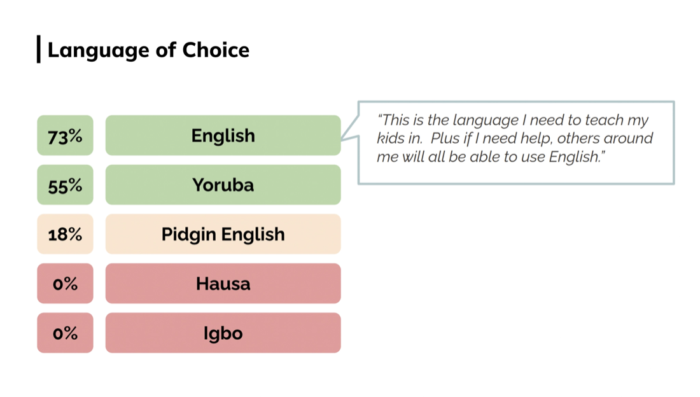
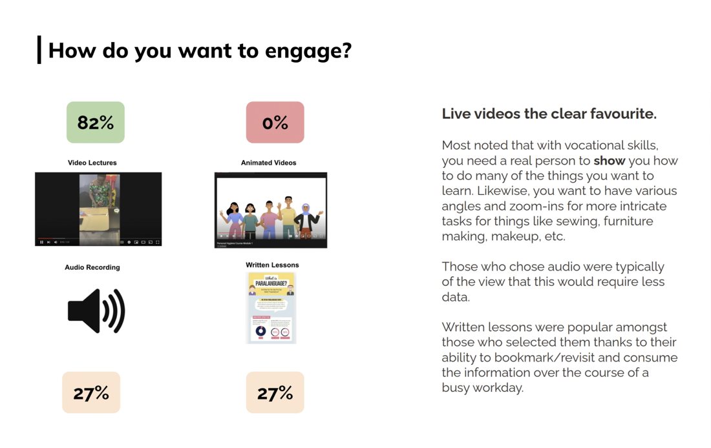
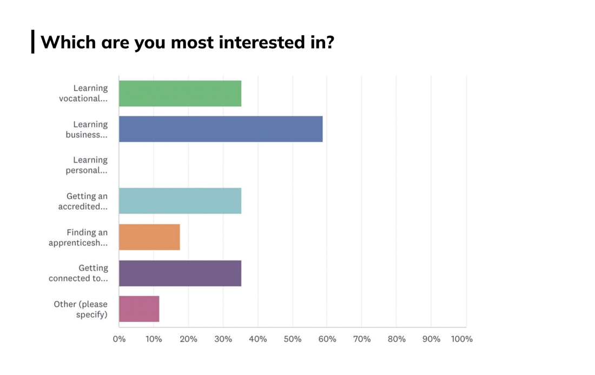
We looked at the four findings alongside what engineering could build in the next release, and acted on all of them:
One idea didn’t make it into the release. I designed an audio guide that read each sign-up step aloud, for people who found forms hard to read, but engineering couldn’t support it in time, so it was left out.
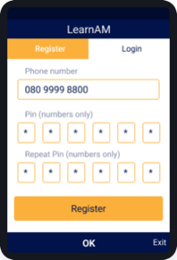
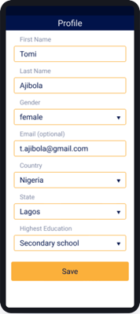
KAIOS MVPAbout 10 fields across two screens
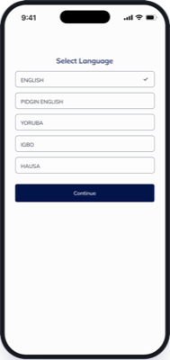
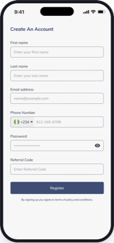
FIRST APP VERSIONA plain language list, then 6 fields with a password
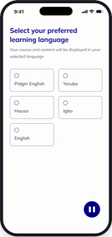
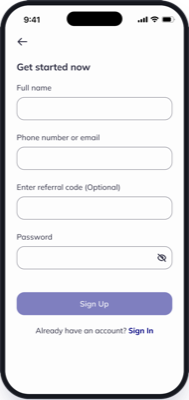
FINAL VERSIONChoose a learning language, then 4 fields (audio guide designed, not shipped)
The language step still comes first, but we reframed it: people now choose their learning language, with a note that their courses will appear in it. In our interviews, people said “English” at first, but many preferred to learn in their first language.
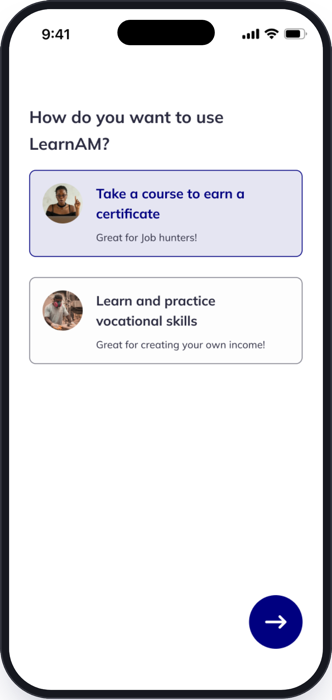
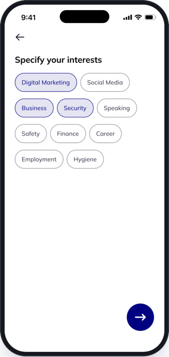
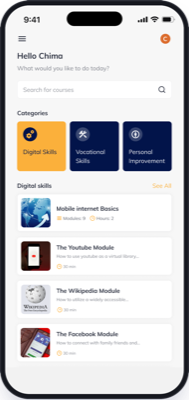
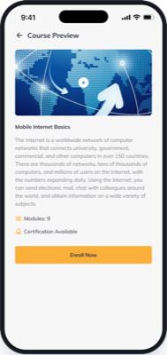
FIRST APP VERSIONThree broad categories, then a long course page
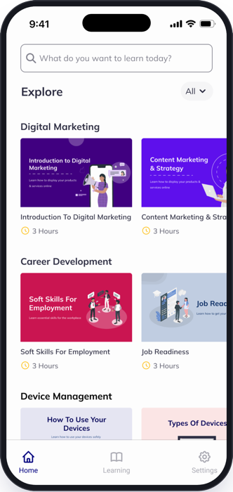
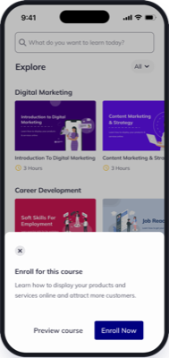
FINAL VERSIONCourses grouped by topic, with a short summary before enrolling
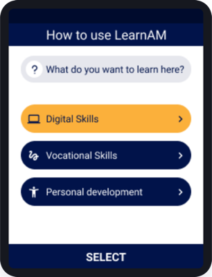
FIRST APP VERSIONThree broad categories, then a long course page
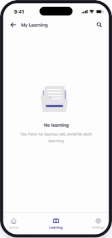
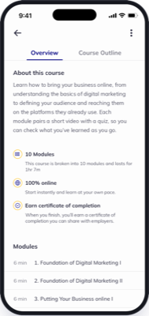
FINAL VERSIONCourses grouped by topic, with a short summary before enrolling
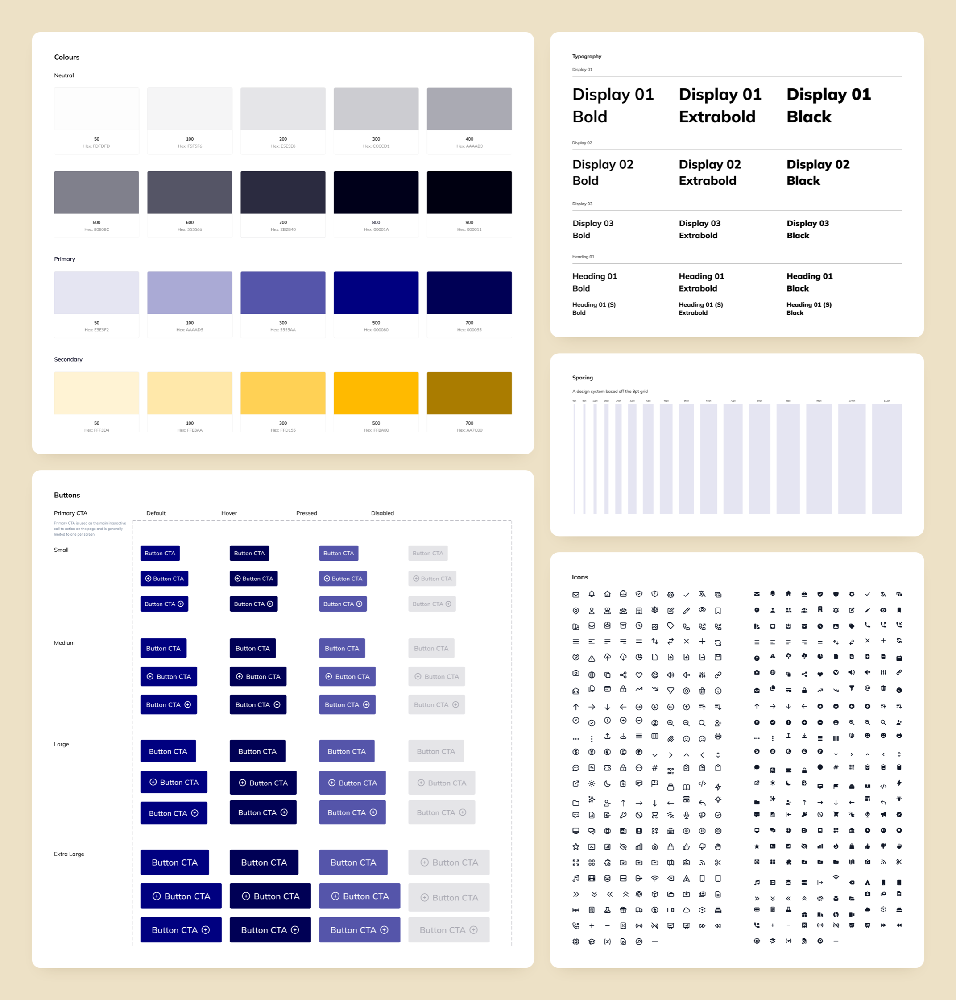
After the redesign launched, alongside a new awareness campaign, downloads rose by about 50%. Usage grew too, but unevenly. Active use went up and down, which told us that getting people to start was only part of the problem. Keeping them coming back needed more work.
Alongside the product work, I designed LearnAM’s marketing materials, including posters, billboards and roll-up banners, to support the team’s awareness campaigns. The billboards spoke the way our users do, with a Pidgin headline and a Yoruba tagline, and pointed people to both the Google Play Store and the KaiOS store. One stood across from the Cathedral Church of Christ in Marina, Lagos.
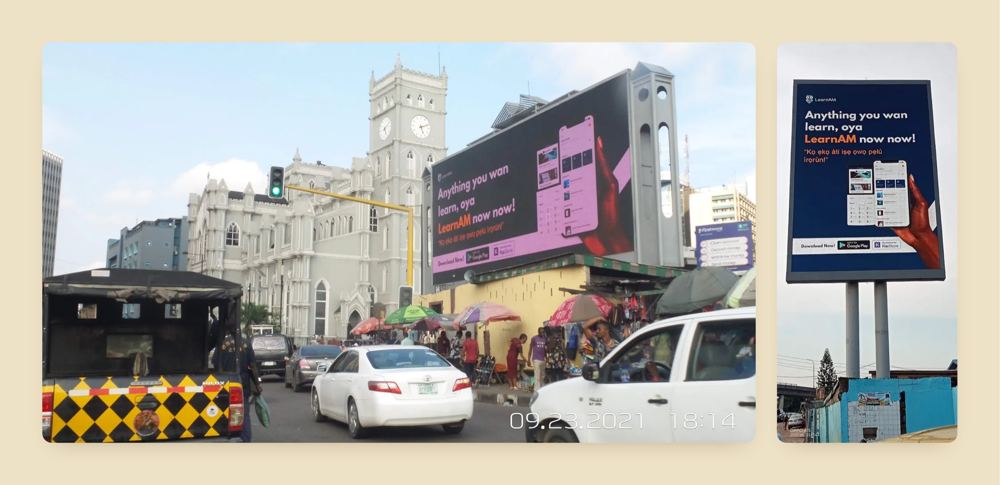
The audio guide is the piece I’d return to first. It was the clearest response to what we saw in the field, and it didn’t make it into the release. Next time, I’d work through feasibility with engineering earlier, so that accessibility features are planned into a release instead of cut from it.
I’d also focus on keeping people coming back, since active use stayed uneven after launch. And I’d test the redesign with users after launch, because our usability testing happened before the changes, not after.
This project taught me how much a team learns when research, product and engineering work through the findings together, instead of design handing over finished screens.
Scape Health
A digital product for reducing long hospital wait times.
Designed a healthcare experience to help patients book appointments, manage hospital visits, and reduce avoidable waiting.
View Case Study